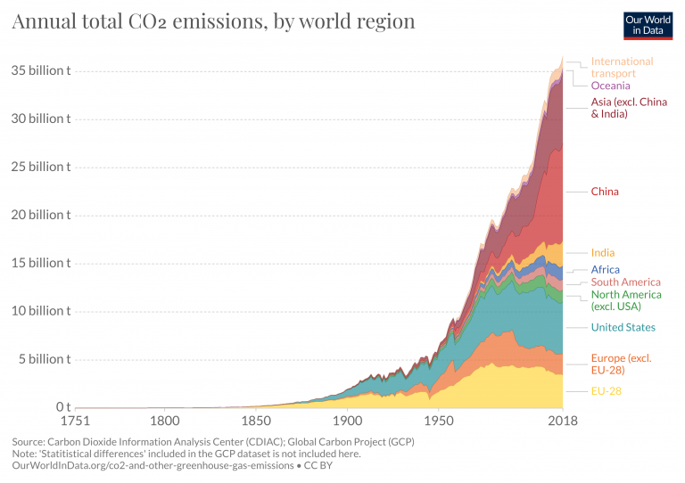

How harmfull is the CO2?
Exposure to CO2 can produce a variety of health effects. These may include headaches, dizziness, restlessness, a tingling or pins or needles feeling, difficulty breathing, sweating, tiredness, increased heart rate, elevated blood pressure, coma, asphyxia, and convulsions. The levels of CO2 in the air and potential health problems are:
- 250 - 400 ppm: background (normal) outdoor air level.
- 400 - 1,000 ppm: typical level found in occupied spaces with good air exchange.
- 1,000 - 2,000 ppm: level associated with complaints of drowsiness and poor air.
- 2,000 - 5,000 ppm: level associated with headaches, sleepiness, and stagnant, stale, stuffy air. Poor concentration, loss of attention, increased heart rate and slight nausea may also be present.
- 5,000 ppm: this indicates unusual air conditions where high levels of other gases could also be present. Toxicity or oxygen deprivation could occur. This is the permissible exposure limit for daily workplace exposures.
- 40,000 ppm: this level is immediately harmful due to oxygen deprivation.
Statistics
